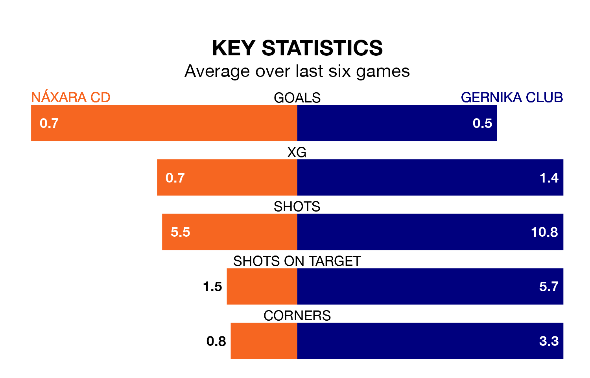

Gernika Club travel to Náxara CD on Sunday in the Segunda División RFEF Group 2.
The visitors come into the game on the back of a defeat in their last match, having lost to CD Tudelano 4-1 at home, with a goal from Aimar Peña Vázquez.
Náxara CD also lost their last match, 1-0 against Real Sociedad III.
Náxara CD are 17th in the table after 27 games, of which they have won four and drawn six, earning 18 points.
Gernika Club are six places ahead of the home team in 11th, with eight wins and 10 draws putting them on 34 points.
With 18 goals in 27 games so far this season, Náxara CD are scoring at below the league average rate with 0.7 goals per game. And they are conceding more than average, letting in 43 goals at a rate of 1.6 per game.
The visitors are also below average scorers, with 1.0 goal per game, compared to a league average of 1.1. They have conceded 1.4 goals per game.
Náxara CD are in mixed form in the Segunda División RFEF Group 2, with two wins and two draws from their last six games.
With two wins and a draw over that period, Gernika Club's form is slightly worse – they have taken seven points from 18, compared to the hosts' eight.
In the last three years, Náxara CD and Gernika Club have played each other on three occasions. Gernika Club won two of them and they drew once.
Their last meeting was on November 12, when they played out a 1-1 draw.
Updated: 10:19 (UTC), 22/03/24